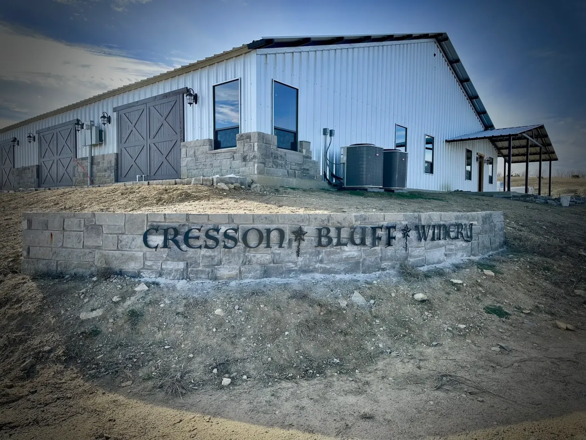
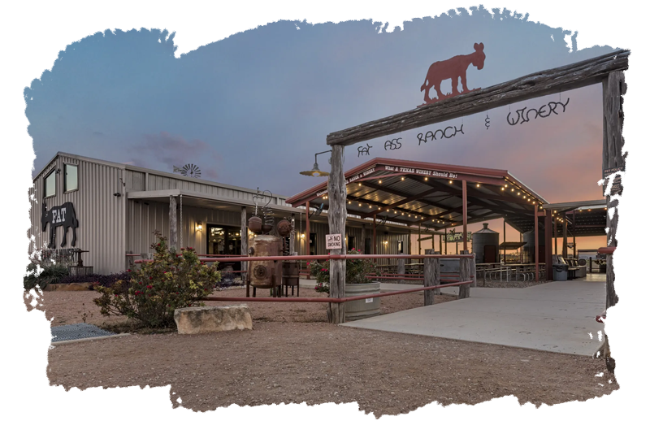
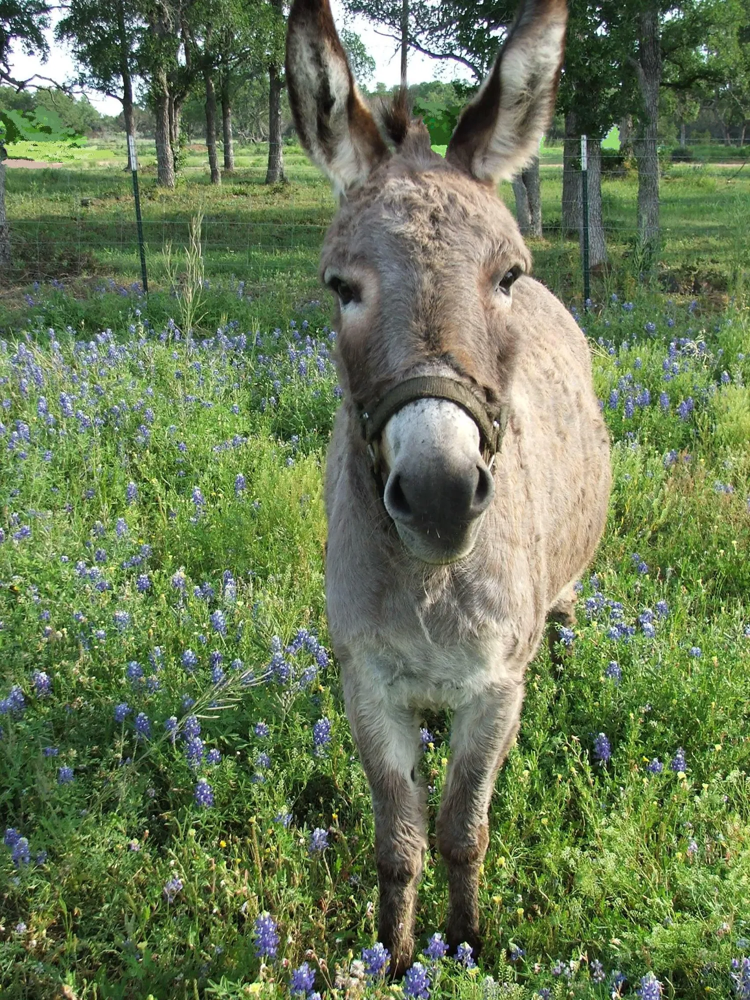

Wineries
Cresson Bluff Winery

About Cresson Bluff Winery Tucked away where the hills meet the sky and the lake sits below, is a place where time slows and the beauty of the land speaks through every glass. What began as a dream among sun-dappled vines, has grown into a heartfelt craft—an expression of family, heritage, and the simple joy of good wine shared among friends. Our vines cling to the rolling hills next to the spring-fed lake of Cresson Bluff, their roots reaching deep into the soil, drawing from the character of this serene place—its seasons, its winds, its whispers. Each harvest we gather not just grapes, but moments: early morning light over the vineyard, the hum of harvest laughter, the scent of oak and earth mingling in the cellar. At Cresson Bluff, winemaking is more than a process—it’s a love story between land and hand. Every bottle carries a touch of our landscape’s wild grace and the warmth of those who tend it. We invite you to slow down, pour a glass, and taste the soul of the bluff itself. Cresson Bluff Winery — where romance lingers in the air, and every sip tells a story..
Baron's Creek Winery

Enjoy Texas' best wine experience in the heart of the Hill Country. We look forward to sharing our wines, winery, and vineyards with you. We strive to provide each of our visitors with an experience that would make even the most discriminating nobility feel at home. We offer tastings to accommodate wine lovers of every distinction. Tastings are $30/person. For group sizes larger than 10 please contact Tastings@BCV.Wine
Lost Oak Winery

Lost Oak Winery is located in Burleson, Texas, in close proximity to Fort Worth, the Stockyards, Sundance Square, Mansfield, Arlington, Cleburne and the entire DFW metroplex! Our winery and vineyard offer a picturesque setting located on the banks of Village Creek with three cultivated vineyards, stately oak trees and winding walking paths; spend the afternoon here. Offering wine tastings, wines by the glass or by the bottle to consume on property or take a few bottles home. Plus charcuterie, flatbread pizzas, paninis and other food and non-alcoholic options. This property measures 52 acres. There are 5 cultivated acres on this site and 3 acres offsite. Gene, Lost Oak’s Founder, has been growing grapes since 1989. He studied viticulture at Grayson County College in Dennison and by correspondence courses but learned much through experience the Texas soil and climate. During his career in the pharmaceutical industry, he had the opportunity to live in France for two years and spent much of his free time in vineyards and wineries. His passion to become a grower and make wine in Texas was born. After retirement, he opened the winery on this property in Burleson in 2006. The entire operation was located in the building which now serves as the tasting room. The name was changed from Lone Oak to Lost Oak in 2012 - ironically, after the winery won a double gold medal in the San Francisco Chronicle competition and it became known that a Sonoma vineyard had trademarked the name Lone Oak. Gene joined Texas Wine and Grape Growers Association (TWGGA) in 1979 when there were only seven wineries. Susan Combs took the dry/wet issue to Congress. Fighting for Texas wineries, she presented to Congress that if wineries could sell their wine out of their tasting room, even in a dry precinct, it would draw more tourism and revenue which in turn would generate excise tax and more money for state. House Bill 892 was passed in 2003. This is how Lost Oak Winery exists today. As a result, Texas has grown from 70 wineries in 2003 to over 275 presently. Texas is now the 5th largest wine producing state next to California, Oregon, Washington and New York. Texas wineries contribute more than $13.1 Billion of Economic Value to the State of Texas. We invite you to enjoy a wine tasting, picnic, and hike or bike, listen to live music host a party of just have a family outing that's sure to be an afternoon of fun.
Fat Ass Ranch & Winery

The Story Behind Fat Ass Ranch Winery & Brewery in Fredericksburg, Texas
It all began with a dream and a slice of the Texas hill country. Gail & Jennie McCulloch, our founders, tied the knot and settled into a life that blended love, laughter, and the fruits of the land. This dream grew into what we now cherish as Fat Ass Winery & Brewery – a name inspired by a moment of humor and a dash of reality when they noticed their beloved donkey, Jackson, growing as sturdy as the horses!
Those early days at the ranch were filled with the simple pleasures of country living. The meals were hearty, the laughter was abundant, and the ranch dog enjoyed the bountiful life, gaining a little extra ‘character’ around the edges.
Gail & Jennie’s vision was rooted in the joy of sharing. They wanted to create a place where every visitor felt like family, where the wine flowed as freely as the stories, and where a day spent was a day remembered. Their passion for winemaking, coupled with a knack for creating unforgettable experiences, turned Fat Ass Winery & Brewery into a beloved destination in the Texas hill country.
So, here’s to the journey, to the stories yet to be told, and to every bottle, glass and craft that brings us together. We invite you to be part of our continuing story, where tradition meets innovation, and where every guest is part of our Fat Ass family.
Welcome to Fat Ass Ranch & Winery – where every visit is an experience, every glass is a celebration, and every guest is family.
Visit Fat Ass Ranch & Winery's Website